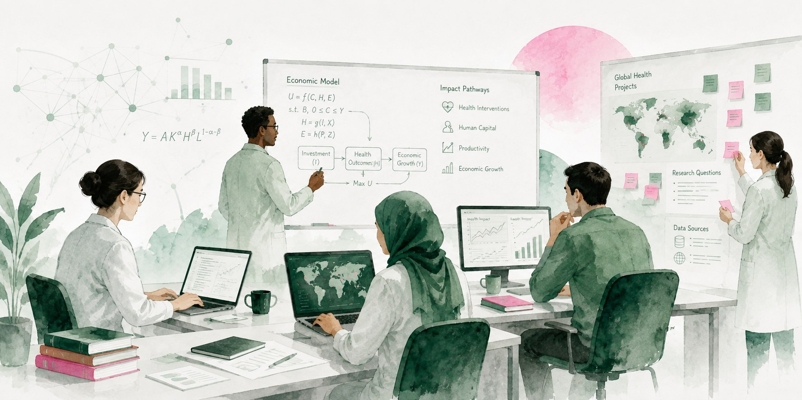

Data. AI.Solutions.Impact.
We help organisations use data and AI to build, evaluate, and scale solutions for the challenges that matter most.

Three domains where dataand AI can change outcomes.
Agriculture × AI
Working with organisations using data and AI on the challenges facing farmers, food systems, productivity, resilience and livelihoods.
02Health × AI
Supporting teams developing data and AI solutions for health and healthcare challenges — from evidence generation through to evaluation and scale.
03Education × AI
Supporting organisations using data and AI to improve learning and access, designed around the realities of the classrooms they serve.
Understand → Build →Evaluate → Scale
Understand
We use research and data to understand the problem before anyone writes code.
Build
We work alongside teams to design and build data and AI solutions.
Evaluate
We help determine whether a solution is working, for whom, and where it can improve.
Scale
We help promising solutions move beyond the pilot and reach the people who need them.
A bridge between whatworks and who candeliver it.
We don't only help organisations build. We help effective solutions connect with the institutions able to put them in front of the people who need them most.
The capabilities behindbetter decisions.
Research, data analysis, impact evaluation, and systematic and narrative reviews — for organisations working on difficult problems.
Research
Understand the problem
Data
Turn it into insight
AI
Build what the evidence supports
Evaluation
Find out if it worked
Better decisions
Act on what you know